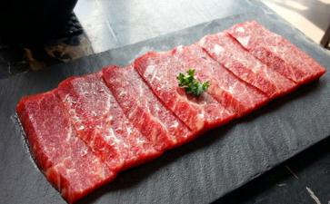

1976年，美国成立由参议员乔治麦高文主持的“营养与人类需要”小组，调查结果显示：以肉食为主的饮食引发的癌症占了超过一半。
1980年，美国国家癌症研究院指派国家科学研究委员会进行食物营养与癌症有关文献的收集和研究。研究报告指出：男性的癌症有四成由肉食引起；女性的癌症高达六成与肉食有关。
美国哈佛大学公共卫生专家马克马洪博士亦称，人类所患的七成癌症均与肉食有关。美国国立
1978年，美国明尼苏达大学的研究人员华登堡发现，椰
1992年，美国加州大学柏克莱分校的学者布洛克检视自1980年以后发表的200篇癌症研究报告，发现食用大量新鲜蔬果可以降低罹患肝癌、胃癌、胰脏癌、结肠癌、膀胱癌、子宫颈癌、卵巢癌和子宫内膜癌的危险；大量食用蔬果的人罹患癌症者只有不经常食用蔬果者的一半。
1997年，美国健康基金会研究证实；蕃茄所含的蕃茄红素（lycopene）是强力的抗氧化剂，有助预防乳癌、摄护腺癌和消化道癌。美国哈佛医学院研究发现，
2003年，美国明尼苏达大学的研究人员发现，姜的根部含有一种名为“姜辣素-6”的成分，具防治结肠癌的作用。
2003年，澳洲墨尔本维多利亚癌症协会发表对四万名不同饮食习惯的十年调查研究结果：多吃西红柿、洋葱能预防前列腺癌，多吃香肠、红肉则会显著增加患癌机会。
2004年，美国德萨斯州农工大学的研究发现，椰菜花、椰菜、
2004年，法国国际健康及药物协会的研究发现，
2005年，美国加州大学研究结果显示，经常吃生果、蔬菜及谷物等素食，能够有助纾缓前列腺癌。加州大学联同纽约一间治疗癌症中心分析了93名前列腺癌患者，发现他们选择吃素菜后，其肿瘤病灶明显有改善。
2005年，英国伦敦大学萨克勒研究所法拉斯卡博士发现，多吃豆类、坚果和谷物，有助于预防癌症，因为小
2005年，美国威斯康星大学医学院哈桑？穆赫塔尔教授进行的一系列实验证实，
2006年，美国密歇根大学综合癌症中心教授蕾贝嘉莉的实验结果显示，姜能以两种方法杀死癌细胞：一是引起细胞凋亡，二是细胞自体吞噬。
2006年，匹兹堡大学医学院的研究结果发现，
此外，新加坡国家癌症中心的研究人员发现，西红柿、苹果、洋葱、
世界各地的研究又发现，
素食含大量的纤维素，能刺激肠蠕动加快，利于通便，使粪便中有害物质及时排出，降低患直肠癌、结肠癌的机会。
美国癌症专家费亚博士说：“素食之低蛋白质、低脂肪和高纤维，令素食者患结肠癌的机会近乎为零！”
加拿大多伦多大学纤维专家戴维詹肯斯亦说：“纤维对于预防结肠癌极为有效。”
美国德州大学安德森医院的Jansson博士发现，钾和钠的摄取量会影响癌症的发展。二十个国家的数据分析显示，凡摄取多量钾的地区，其患癌人数即降低，而钾在蔬菜及豆类中很丰富。
美国麻省理工学院化学博士、美国德州大学安德森医院肿瘤研究所癌症专家雷久南指出，细胞内钾是钠的10倍左右，故细胞如要维持正常功能，必须摄取钾、排斥钠。如果细胞受损害失去钾的话，便会立刻开始繁殖分裂。癌细胞所含钾和钠的对比，少于正常细胞，因此癌细胞能无限制的生长，与钾钠比例有直接关系。
据统计，各国癌病发病率和钾的摄取量成反比，由此证明，钾和钠的比例是癌细胞形成的关键，进一步说明钾对癌症有预防作用。正常人应该摄取钾多于钠，比例是2:1。美国农业部的数据显示，若以钾对钠的比例为标准，
一个由北京协和医院等单位的著名医师组成的医疗委员会调查显示，肉食与癌症有正相关。调查报告这样写道：“北京市癌症发病情况，1996年是1955年5.2倍。我们调查了城区的医院、居民，上个世纪大肠癌患病比例是十万分之十以下，八十年代十万之二十，九十年代十万之二十四，2001年十万分之六十点四五。为什么城市里的癌症病人越来越多？证据显示，跟饮食有关，吃肉多了，不吃粗粮，纤维素少了……。调研结论显示：癌症的增长率跟肉食的增长率曲线相似甚至多处重合” ，据此，国内报告与国外同行的结论一致。
另一个医学调查小组的报告说：“我国原是大肠癌的低发区，不足十万分之十，可近二三十年来随着食物结构的改变，肉食量的增加，发病率不断上升，达到了十万分之二十四点三一，相当于国际上中等发病水平。2000年以后，大肠癌发病人数比八十年代高出1.45倍。上海地区大肠癌死亡率从1972年到1989年增加了75%，在“2004年天津市肿瘤防治宣传周”上，专家如是说。“天津市癌症年新发病例为1.6万，增长数量和年轻化趋势都较为显著。据介绍，癌症尽管与遗传因素有关，但主要还是由包括饮食在内环境因素引起，吃肉多了，主食吃得精细了，缺乏纤维素，即粗粮、杂粮等食入少，导致大肠癌发病率的升高；高脂肪、高蛋白的摄入是乳腺癌、结直肠癌发病率上升的重要原因” 。
癌症跟肉食关系密切。根据一九九五年英国素食学会的研究报告发现，素食者早逝的机会只有非素食者的一半，且素食者较不会得心脏病和癌症，主要原因是素食者血中胆固醇含量低的缘故，肉里到底有什么，为什么会致癌？除了公认的医学理论，许多学者和专家的研究结果都把致癌物指向肉食。因此，无须讳言已经被科学证明的事实：肉食，在今天已经严重威胁到大众身体健康甚至生命安全，为了我们的健康水平和生命质量，请尽量素食。